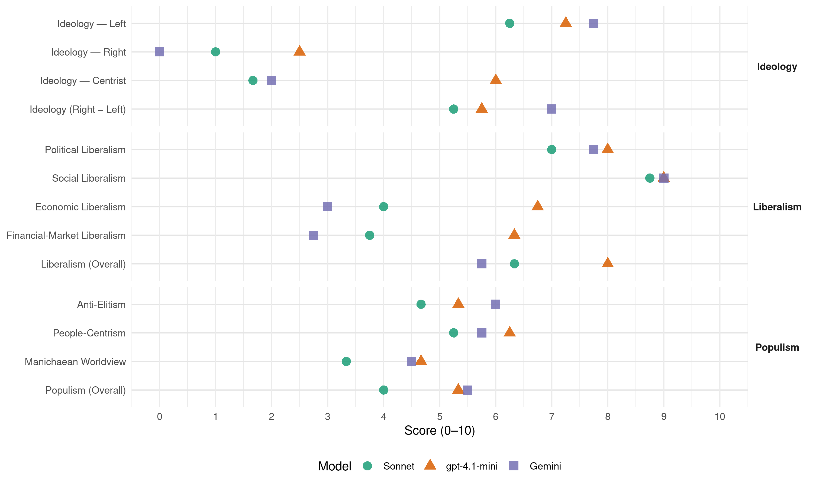

(Chile, 2021)
manifesto_id 155027_202111
Get full text: This site shows derived annotations and short verbatim quotes only. The full manifesto text is © Manifesto Project / WZB — obtain it via manifesto-project.wzb.eu using the manifesto_id above.
Headline scores
| Dimension | Sonnet | gpt-4.1-mini | Gemini |
|---|---|---|---|
| Populism (Overall) | 4.0 | 5.3 | 5.5 |
| Anti-Elitism | 4.7 | 5.3 | 6.0 |
| People-Centrism | 5.2 | 6.2 | 5.8 |
| Manichaean Worldview | 3.3 | 4.7 | 4.5 |
| Ideology (Right − Left) | 5.2 | 5.8 | 7.0 |
| Liberalism (Overall) | 6.3 | 8.0 | 5.8 |
| Political Liberalism | 7.0 | 8.0 | 7.8 |
| Social Liberalism | 8.8 | 9.0 | 9.0 |
| Economic Liberalism | 4.0 | 6.8 | 3.0 |
| Financial-Market Liberalism | 3.8 | 6.3 | 2.8 |
Evidence per dimension
Economic Liberalism
Gemini · score 2.0 · verified · chunk 1
“donde el mercado deje de ser el principio estructurador”
que ponga en el centro a las personas y sus necesidades, en armonía con un desarrollo sostenible y la protección del medio ambiente, donde el mercado deje de ser el principio estructurador de la sociedad, para que el Estado vuelva a tomar un rol preponderante
Gemini · score 3.0 · verified · chunk 2
“creando una empresa estatal de redes”
En términos de provisión pública, crearemos una empresa estatal de redes de telecomunicaciones orientada
Gemini · score 2.0 · verified · chunk 3
“continuaremos removiendo las dinámicas de mercado de la educación”
reforzaremos la educación para la ciudadanía en todos los niveles educativos. Continuaremos removiendo las dinámicas de mercado de la educación, para ello propondremos un nuevo sistema
Gemini · score 5.0 · verified · chunk 4
“optimizar la competencia y eficiencia en las compras públicas”
plantearemos una reforma al sistema para optimizar la competencia y eficiencia en las compras públicas, mediante un proceso que sea óptimo
gpt-4.1-mini · score 7.0 · verified · chunk 1
“Reactivaremos la economía con las Mipymes, asegurando acceso a financiamiento directo y créditos garantizados”
Reactivaremos la economía con las Mipymes, asegurando acceso a financiamiento directo y créditos garantizados, implementando medidas tributarias especiales como la postergación del IVA y la condonación de intereses y multas devengadas durante la pandemia, y acompañando su proceso de transformación digital.
gpt-4.1-mini · score 7.0 · verified · chunk 2
“fomentaremos la innovación y emprendimiento local, teniendo en consideración la realidad de cada territorio”
Apoyaremos el fortalecimiento de capacidades en gobiernos regionales y municipalidades para fomentar la innovación y emprendimiento local, teniendo en consideración la realidad de cada territorio, poniendo énfasis en el emprendimiento de pueblos originarios y comunidades rurales.
gpt-4.1-mini · score 6.0 · verified · chunk 3
“revisaremos la fórmula adecuada para dejar sin efecto el Decreto Ley de Amnistía”
…Continuaremos removiendo las dinámicas de mercado de la educación, para ello propondremos un nuevo sistema de financiamiento público de los establecimientos educacionales, que no se base en promover la competencia, sino en garantizar el derecho a una buena educación…
gpt-4.1-mini · score 7.0 · verified · chunk 4
“promoveremos una reforma al sistema de compras públicas para optimizar la competencia y eficiencia”
Lamentablemente, nuestro sistema no cumple con ellos de manera satisfactoria, por lo que plantearemos una reforma al sistema para optimizar la competencia y eficiencia en las compras públicas, mediante un proceso que sea óptimo, eficiente y transparente. Así se fortalecen los sistemas preventivos y sancionatorios de actos de corrupción y faltas a la probidad.
Sonnet · score 3.0 · verified · chunk 1
“el mercado deje de ser el principio estructurador de la sociedad”
donde el mercado deje de ser el principio estructurador de la sociedad, para que el Estado vuelva a tomar un rol preponderante, tanto en la provisión y garantización de derechos sociales, como en la administración de los recursos naturales.
Sonnet · score 4.0 · mixed · chunk 2
“eliminar las barreras de entrada que existen”
Trabajaremos por eliminar las barreras de entrada que existen para la participación de las mipymes y cooperativas en distintos mercados
Sonnet · score 4.0 · verified · chunk 3
“Continuaremos removiendo las dinámicas de mercado”
Continuaremos removiendo las dinámicas de mercado de la educación, para ello propondremos un nuevo sistema de financiamiento público
Sonnet · score 5.0 · verified · chunk 4
“optimizar la competencia y eficiencia en las compras públicas”
plantearemos una reforma al sistema para optimizar la competencia y eficiencia en las compras públicas, mediante un proceso que sea óptimo, eficiente y transparente
Financial-Market Liberalism
Gemini · score 3.0 · verified · chunk 1
“creación de una Banca Nacional de Desarrollo que canalice recursos”
Esta nueva estructura requerirá una rápida transformación digital, una reconversión laboral justa, avanzar más audazmente en la transformación energética y un fuerte desarrollo de la ciencia, el conocimiento, la tecnología y la innovación orientada por misión, entre otros factores. Todas las políticas propuestas se despliegan en colaboración con el sector privado, pero contemplan un rol estratégico del Estado. Proponemos una nueva institucionalidad para el fomento productivo, científico y tecnológico, con un sustantivo aumento del financiamiento público, y la creación de una Banca Nacional de Desarrollo que canalice recursos hacia los sectores y actividades que se necesitan para el cambio estructural.
Gemini · score 2.0 · verified · chunk 2
“Banca Nacional de Desarrollo apoyará la innovación”
La Banca Nacional de Desarrollo apoyará la innovación y la formación para el conocimiento
Gemini · score 2.0 · verified · chunk 3
“público, solidario, sin interés, sin participación de los bancos”
crearemos un nuevo sistema único de créditos que será transitorio, hasta alcanzar la gratuidad universal. Será público, solidario, sin interés, sin participación de los bancos y no reproducirá los abusos del CAE.
Gemini · score 4.0 · verified · chunk 4
“regulación en materia de consumo financiero, sistematizando la normativa”
Fortaleceremos la institucionalidad y regulación en materia de consumo financiero, sistematizando la normativa existente y robusteciendo ampliamente las competencias
gpt-4.1-mini · score 6.0 · verified · chunk 1
“Crearemos un Banco Nacional de Desarrollo que financiará la innovación y desarrollo de PYMES”
Crearemos un Banco Nacional de Desarrollo que financiará la innovación y desarrollo de PYMES e iniciativas que apunten hacia un cambio estructural de nuestra matriz productiva, funcionando como un conglomerado financiero, con un gobierno corporativo especializado e independiente.
gpt-4.1-mini · score 6.0 · verified · chunk 2
“un Banco Nacional de Desarrollo que funcione como un conglomerado financiero con dos empresas estatales especializadas”
Proponemos un Banco Nacional de Desarrollo (BND) que funcione como un conglomerado financiero con dos empresas estatales especializadas: Un Banco especializado en créditos, con instrumentos de primer y segundo piso; y un Fondo de Financiamiento especializado en el otorgamiento de capital a empresas innovadoras,
gpt-4.1-mini · score 7.0 · verified · chunk 4
“Fortaleceremos la institucionalidad y regulación en materia de consumo financiero, sistematizando la normativa existente”
Proponemos, entre otras medidas: Fortaleceremos la institucionalidad y regulación en materia de consumo financiero, sistematizando la normativa existente y robusteciendo ampliamente las competencias del SERNAC al respecto. Avanzaremos en establecer equidad en la distribución de los costos asociados a las operaciones de crédito, regulando también los espacios de arbitrariedad.
Sonnet · score 4.0 · verified · chunk 1
“Banca Nacional de Desarrollo que canalice recursos”
la creación de una Banca Nacional de Desarrollo que canalice recursos hacia los sectores y actividades que se necesitan para el cambio estructural.
Sonnet · score 3.0 · verified · chunk 2
“sistema financiero chileno, de enfoque cortoplacista”
El sistema financiero chileno, de enfoque cortoplacista y adverso al riesgo y a la innovación, no entrega ni la estructura ni la escala de instrumentos financieros
Sonnet · score 3.0 · verified · chunk 3
“sin participación de los bancos”
Será público, solidario, sin interés, sin participación de los bancos y no reproducirá los abusos del CAE
Sonnet · score 5.0 · verified · chunk 4
“asimetrías que existen en el mercado financiero”
el abuso también se expresa en una serie de asimetrías que existen en el mercado financiero que es necesario corregir para terminar con el ciclo del sobre endeudamiento
Political Liberalism
Gemini · score 8.0 · verified · chunk 1
“un nuevo Estado democrático y moderno”
Pueblos originarios y afrodescendientes Capítulo 3 Profundizar la democracia y cuidar el proceso de cambios 199 Un nuevo Estado democrático y moderno Compras públicas Transparencia y ley del lobby
Gemini · score 7.0 · verified · chunk 2
“mejorar la calidad de su democracia”
Chile necesita construir un nuevo modelo de relaciones laborales para mejorar la calidad de su democracia.
Gemini · score 8.0 · verified · chunk 3
“garantizado el derecho a la información, la libertad de expresión”
Para una democracia plena es fundamental que esté garantizado el derecho a la información, la libertad de expresión y que los medios de comunicación estén protegidos
Gemini · score 8.0 · verified · chunk 4
“consagre la libertad religiosa, de creencias y espiritualidades”
Proponemos un Estado laico que consagre la libertad religiosa, de creencias y espiritualidades, al tiempo que garantiza su efectivo goce
gpt-4.1-mini · score 8.0 · verified · chunk 1
“Profundizar la democracia y cuidar el proceso de cambios”
Capítulo 3 Profundizar la democracia y cuidar el proceso de cambios 174 Derechos Humanos 179 Inclusión, promoción de derechos y erradicación de las violencias Pueblos originarios y afrodescendientes Capítulo 3 Profundizar la democracia y cuidar el proceso de cambios 199 Un nuevo Estado democrático y moderno Compras públicas Transparencia y ley del lobby Un Gobierno Feminista
gpt-4.1-mini · score 8.0 · verified · chunk 2
“la universalización de la cobertura del FONASA a todas las personas que residan en el país”
Generaremos un fondo universal de salud (FUS) que actuará como un administrador único de los recursos, a través de la universalización de la cobertura del FONASA a todas las personas que residan en el país. El FUS recaudará y administrará las cotizaciones de las y los trabajadores (7%), junto a los aportes del Estado.
gpt-4.1-mini · score 8.0 · verified · chunk 3
“respeto irrestricto a los derechos humanos, en todo momento y lugar”
…Nuestro compromiso democrático es integral, y tiene como columna vertebral el respeto irrestricto a los derechos humanos, en todo momento y lugar. Chile tiene tareas pendientes en los procesos de verdad, justicia y reparación…
gpt-4.1-mini · score 8.0 · verified · chunk 4
“fortaleciendo el rol del Consejo para la Transparencia (CPLT) como órgano garante”
Promoveremos a nivel nacional la mayor difusión y promoción del principio de transparencia, del derecho de acceso a la información y del rol del Consejo para la Transparencia (CPLT) como órgano garante, con enfoque de género y fortaleciendo la orgánica del Ejecutivo encargada de la formación permanente para los equipos y profesionales encargados de transparencia en todo el país.
Sonnet · score 7.0 · verified · chunk 1
“Profundizar la democracia y cuidar el proceso de cambios”
Capítulo 3 Profundizar la democracia y cuidar el proceso de cambios 174 Derechos Humanos 179 Inclusión, promoción de derechos y erradicación de las violencias
Sonnet · score 6.0 · verified · chunk 2
“gobernanza democrática y participativa”
bajo un enfoque de gobernanza democrática y participativa, para una gestión integrada a nivel nacional
Sonnet · score 7.0 · verified · chunk 3
“democracia plena para todos y todas”
Construir una democracia plena para todos y todas requiere enfrentar los resabios de la discriminación, el maltrato y las violencias
Sonnet · score 8.0 · verified · chunk 4
“control democrático en el Congreso y la Contraloría”
Incrementar mecanismos de control democrático en el Congreso y la Contraloría en materias políticas y administrativas.
Liberalism (Overall)
Gemini · score 6.0 · verified · chunk 1
“donde el mercado deje de ser el principio estructurador”
que ponga en el centro a las personas y sus necesidades, en armonía con un desarrollo sostenible y la protección del medio ambiente, donde el mercado deje de ser el principio estructurador de la sociedad, para que el Estado vuelva a tomar un rol preponderante
Gemini · score 5.0 · verified · chunk 2
“Consagración de un Estado Social de Derecho”
mejorar la vida del 30% más pobre. Consagración de un Estado Social de Derecho Nuevo sistema de pensiones
Gemini · score 5.0 · verified · chunk 3
“garantizado el derecho a la información, la libertad de expresión”
Para una democracia plena es fundamental que esté garantizado el derecho a la información, la libertad de expresión y que los medios de comunicación estén protegidos
Gemini · score 7.0 · verified · chunk 4
“consagre la libertad religiosa, de creencias y espiritualidades”
Proponemos un Estado laico que consagre la libertad religiosa, de creencias y espiritualidades, al tiempo que garantiza su efectivo goce
gpt-4.1-mini · score 8.0 · verified · chunk 1
“Profundizar la democracia y cuidar el proceso de cambios”
Capítulo 3 Profundizar la democracia y cuidar el proceso de cambios 174 Derechos Humanos 179 Inclusión, promoción de derechos y erradicación de las violencias Pueblos originarios y afrodescendientes Capítulo 3 Profundizar la democracia y cuidar el proceso de cambios 199 Un nuevo Estado democrático y moderno Compras públicas Transparencia y ley del lobby Un Gobierno Feminista
gpt-4.1-mini · score 8.0 · verified · chunk 2
“un Sistema Universal de Salud en el mediano plazo, que instaure a la salud como derecho en el país”
Junto con mejorar la gestión para hacernos cargo de la crisis sanitaria, comenzaremos un proceso de cambio que nos permita tener un Sistema Universal de Salud en el mediano plazo, que instaure a la salud como derecho en el país. Este proceso estará constituido por 10 líneas de acción:
gpt-4.1-mini · score 8.0 · verified · chunk 3
“respeto irrestricto a los derechos humanos, en todo momento y lugar”
…Nuestro compromiso democrático es integral, y tiene como columna vertebral el respeto irrestricto a los derechos humanos, en todo momento y lugar. Chile tiene tareas pendientes en los procesos de verdad, justicia y reparación…
gpt-4.1-mini · score 8.0 · verified · chunk 4
“fortaleciendo el rol del Consejo para la Transparencia (CPLT) como órgano garante”
Promoveremos a nivel nacional la mayor difusión y promoción del principio de transparencia, del derecho de acceso a la información y del rol del Consejo para la Transparencia (CPLT) como órgano garante, con enfoque de género y fortaleciendo la orgánica del Ejecutivo encargada de la formación permanente para los equipos y profesionales encargados de transparencia en todo el país.
Sonnet · score 6.0 · verified · chunk 1
“garantía del trabajo decente”
Nuestro Plan de Gobierno tiene cuatro perspectivas transversales: feminismo, transición ecológica justa, descentralización y garantía del trabajo decente.
Sonnet · score 5.0 · mixed · chunk 2
“Estado vuelva a ser un actor relevante”
es fundamental que el Estado vuelva a ser un actor relevante en el financiamiento productivo de nuestro país
Sonnet · score 6.0 · verified · chunk 3
“respeto irrestricto a los derechos humanos”
uno de los pilares de nuestro gobierno será el respeto irrestricto a los derechos humanos, en todo momento y lugar
Sonnet · score 7.0 · verified · chunk 4
“mayor transparencia en la actividad gubernamental”
propiciaremos que la ciudadanía pueda acceder a una mayor transparencia en la actividad gubernamental. Los indicadores de gestión serán ampliamente difundidos
Anti-Elitism
Gemini · score 8.0 · verified · chunk 1
“quienes han utilizado esos derechos para hacer negocios mantienen ilegítimos privilegios”
Las familias sufren un sistema de salud y de pensiones que no les tiene en cuenta, mientras quienes han utilizado esos derechos para hacer negocios mantienen ilegítimos privilegios. En este contexto de incertidumbre
Gemini · score 6.0 · verified · chunk 2
“ponga fin a la historia de corrupción”
y que ponga fin a la historia de corrupción y cohecho que arrastra la legislación actual.
Gemini · score 6.0 · verified · chunk 3
“una gran proporción de sus rentas son apropiadas por un conjunto pequeño de grandes conglomerados”
exclusivo, inalienable e imprescriptible sobre todos los yacimientos de cobre de nuestro país, una gran proporción de sus rentas son apropiadas por un conjunto pequeño de grandes conglomerados. Respetando los contratos de invariabilidad tributaria
Gemini · score 4.0 · verified · chunk 4
“siempre inclinar la balanza en favor de los más poderosos”
Casos recientes han develado una cultura de abusos que parece siempre inclinar la balanza en favor de los más poderosos, generando un sentimiento de desprotección e injusticia
gpt-4.1-mini · score 8.0 · verified · chunk 1
“las familias sufren un sistema de salud y de pensiones que no les tiene en cuenta, mientras quienes han utilizado esos derechos para hacer negocios mantienen ilegítimos privilegios”
Las familias sufren un sistema de salud y de pensiones que no les tiene en cuenta, mientras quienes han utilizado esos derechos para hacer negocios mantienen ilegítimos privilegios. En este contexto de incertidumbre, necesitamos un gobierno que acompañe los cambios que nacieron de la gente y que al mismo tiempo enfrente con decisión los retos a los que nos enfrentamos como sociedad.
gpt-4.1-mini · score 5.0 · mixed · chunk 2
“la historia de corrupción y cohecho que arrastra la legislación actual”
derogaremos una nueva Ley de Pesca y Acuicultura, orientada a lograr la sostenibilidad de las actividades de extracción y cultivo de especies, fortaleciendo las capacidades y herramientas para el monitoreo y vigilancia del estado de las pesquerías y el cuidado de los ecosistemas y que ponga fin a la historia de corrupción y cohecho que arrastra la legislación actual. Esta ley debe tener en cuanta la legislación indígena preexistente.
gpt-4.1-mini · score 4.0 · verified · chunk 3
“terminando con décadas de abandono y privatización”
…sellaremos el compromiso del Estado con fortalecer y expandir la educación pública, terminando con décadas de abandono y privatización. Continuaremos el proceso de desmunicipalización…
gpt-4.1-mini · score 4.0 · verified · chunk 4
“la ciudadanía reclama el buen uso de los recursos públicos ante el avance del clientelismo, el nepotismo y la desprofesionalización de la función pública, junto a actos de corrupción en diversos órganos del Estado”
La ciudadanía reclama el buen uso de los recursos públicos ante el avance del clientelismo, el nepotismo y la desprofesionalización de la función pública, junto a actos de corrupción en diversos órganos del Estado. Estos recursos deben ser objeto de un control adecuado del gasto: Estudiaremos reformas para que los cargos de planta sean llenados por concursos periódicos de oposición anónimos para seleccionar a las personas que cumplen requisitos habilitantes de formación idónea bajo los principios de profesionalismo, integridad, paridad de género y respeto de la diversidad.
Sonnet · score 6.0 · verified · chunk 1
“quienes han utilizado esos derechos para hacer negocios mantienen ilegítimos privilegios”
Las familias sufren un sistema de salud y de pensiones que no les tiene en cuenta, mientras quienes han utilizado esos derechos para hacer negocios mantienen ilegítimos privilegios.
Sonnet · score 4.0 · mixed · chunk 2
“historia de corrupción y cohecho que arrastra”
ponga fin a la historia de corrupción y cohecho que arrastra la legislación actual
Sonnet · score 4.0 · verified · chunk 3
“grandes conglomerados”
sus rentas son apropiadas por un conjunto pequeño de grandes conglomerados. Respetando los contratos de invariabilidad tributaria
Sonnet · score 4.0 · verified · chunk 4
“cultura de abusos que parece siempre inclinar la balanza en favor de los más poderosos”
Casos recientes han develado una cultura de abusos que parece siempre inclinar la balanza en favor de los más poderosos, generando un sentimiento de desprotección e injusticia
Ideology — Centrist
Gemini · score 2.0 · verified · chunk 4
“reconstruyan la confianza de las personas en las instituciones”
Nuestro gobierno será un activo promotor de las transformaciones que reconstruyan la confianza de las personas en las instituciones, incluidas las del sector judicial.
gpt-4.1-mini · score 7.0 · verified · chunk 1
“una coalición amplia y heterogénea, con independientes, jóvenes de todas las generaciones”
Ese desafío ha dado forma a Apruebo Dignidad, una coalición amplia y heterogénea, con independientes, jóvenes de todas las generaciones, que excede a sus partidos y movimientos, con una profunda cohesión en su proyecto político expresada en el programa transformador que aquí presentamos.
gpt-4.1-mini · score 6.0 · verified · chunk 2
“la participación de distintos actores que se comprometan con la generación de impactos positivos en sus comunidades”
con capacidad de dinamizar la economía en todos los territorios, con la participación de distintos actores que se comprometan con la generación de impactos positivos en sus comunidades. Apoyaremos el fortalecimiento de capacidades en gobiernos regionales y municipalidades para fomentar la innovación y emprendimiento local,
gpt-4.1-mini · score 6.0 · verified · chunk 3
“fortaleceremos la confianza de las personas en las instituciones del Estado”
…Trabajaremos para fortalecer la confianza de las personas en las instituciones del Estado, pero también en sus comunidades, contribuyendo a fortalecer la cohesión social en barrios, ciudades y el país.
gpt-4.1-mini · score 5.0 · verified · chunk 4
“la ciudadanía pueda acceder a una mayor transparencia en la actividad gubernamental”
Mediante una comunicación fundamentada de las decisiones del Gobierno y la ejecución del gasto público a nivel desagregado, propiciaremos que la ciudadanía pueda acceder a una mayor transparencia en la actividad gubernamental. Los indicadores de gestión serán ampliamente difundidos, y revisados anualmente en conjunto con la ley de presupuestos de la nación.
Sonnet · score 2.0 · verified · chunk 1
“No son las ideas de unos pocos”
No son las ideas de unos pocos, sino que es un programa abierto a la comunidad, colaborativo y participativo.
Sonnet · score 1.0 · verified · chunk 3
“participación ciudadana en la elaboración”
queremos incorporar mecanismos de participación ciudadana en la elaboración y seguimiento del presupuesto de la nación
Sonnet · score 2.0 · verified · chunk 4
“igualdad ante la ley”
Una sociedad con más confianza y cohesión social sólo se construye con igualdad ante la ley, por eso nos enfocaremos en prevenir los abusos
Ideology — Left
Gemini · score 9.0 · verified · chunk 1
“reforma tributaria para que quienes tienen más contribuyan más”
En nuestro gobierno la educación volverá a ser un derecho y dejará de ser una mochila de deudas. Realizaremos una reforma tributaria para que quienes tienen más contribuyan más. De manera responsable y coherente
Gemini · score 8.0 · verified · chunk 2
“terminaremos con el negocio de las ISAPRE”
Con ello terminaremos con el negocio de las ISAPRE, las cuales se transformarán en seguros
Gemini · score 8.0 · verified · chunk 3
“superar las lógicas de mercado instauradas y profundizadas en las últimas décadas”
con el objetivo de garantizar el derecho a la educación y la reapropiación de la sociedad en la producción y reproducción del conocimiento. Para ello es preciso superar las lógicas de mercado instauradas y profundizadas en las últimas décadas, y reparar a quienes han sido
Gemini · score 6.0 · verified · chunk 4
“enfrenten los abusos del poder económico en todas las áreas”
Nuestro Gobierno se compromete a implementar reformas que enfrenten los abusos del poder económico en todas las áreas en que se expresa:
gpt-4.1-mini · score 9.0 · verified · chunk 1
“un nuevo Chile más justo y digno para todos y todas”
Programa de Gobierno Apruebo Dignidad Compatriota: Tienes en tus manos (o en tu pantalla) un documento que expresa nuestras convicciones, nuestro norte (que es el sur) y nuestras propuestas para, cuidando lo valioso que hoy tenemos, construir un Chile más justo y digno para todos y todas.
gpt-4.1-mini · score 7.0 · verified · chunk 2
“fortaleceremos el rol en torno a la soberanía alimentaria, el desarrollo rural y la conservación”
Reformularemos participativamente la institucionalidad de Agricultura y Pesca, para fortalecer el rol en torno a la soberanía alimentaria, el desarrollo rural y la conservación y el manejo sustentable de los recursos naturales.
gpt-4.1-mini · score 7.0 · verified · chunk 3
“revisaremos la fórmula adecuada para dejar sin efecto el Decreto Ley de Amnistía”
…Revisaremos la fórmula adecuada para dejar sin efecto el Decreto Ley de Amnistía N° 2.191 para cumplir con la recomendación de los órganos internacionales de derechos humanos. Revisar las medidas de reparación a las víctimas de la dictadura…
gpt-4.1-mini · score 6.0 · verified · chunk 4
“aumentaremos el aporte fiscal al Fondo Común Municipal en más de un 1000%”
Por esta razón enviaremos un proyecto de ley de reforma del financiamiento municipal que, dentro de las medidas, aumentará el aporte fiscal al Fondo Común Municipal en más de un 1000%, permitiendo así que todos los municipios puedan implementar políticas de acción directa como crear farmacias o inmobiliarias populares, lo que mejorarará la vida de los vecinos y vecinas.
Sonnet · score 8.0 · verified · chunk 1
“un impuesto a los súper ricos, royalty a la gran minería”
Proponemos, entre otros, un impuesto a los súper ricos, royalty a la gran minería del cobre y un combate frontal a la evasión tributaria que tanto daño le hace a Chile.
Sonnet · score 7.0 · verified · chunk 2
“terminaremos con el negocio de las ISAPRE”
Con ello terminaremos con el negocio de las ISAPRE, las cuales se transformarán en seguros complementarios voluntarios
Sonnet · score 6.0 · verified · chunk 3
“reforma tributaria recaudará del orden del 8%”
La reforma tributaria recaudará del orden del 8% del PIB en régimen. Los cambios serán aprobados durante el próximo Gobierno
Sonnet · score 4.0 · verified · chunk 4
“deuda en los sectores de ingresos más bajos”
la deuda en los sectores de ingresos más bajos es casi solo consumo, los índices de morosidad y carga financiera, son mucho peores para la población más vulnerable
Ideology (Right − Left)
Gemini · score 8.0 · verified · chunk 1
“reforma tributaria para que quienes tienen más contribuyan más”
En nuestro gobierno la educación volverá a ser un derecho y dejará de ser una mochila de deudas. Realizaremos una reforma tributaria para que quienes tienen más contribuyan más. De manera responsable y coherente
Gemini · score 8.0 · verified · chunk 2
“Consagración de un Estado Social de Derecho”
mejorar la vida del 30% más pobre. Consagración de un Estado Social de Derecho Nuevo sistema de pensiones
Gemini · score 8.0 · verified · chunk 3
“superar las lógicas de mercado instauradas y profundizadas en las últimas décadas”
con el objetivo de garantizar el derecho a la educación y la reapropiación de la sociedad en la producción y reproducción del conocimiento. Para ello es preciso superar las lógicas de mercado instauradas y profundizadas en las últimas décadas, y reparar a quienes han sido
Gemini · score 4.0 · verified · chunk 4
“enfrenten los abusos del poder económico en todas las áreas”
Nuestro Gobierno se compromete a implementar reformas que enfrenten los abusos del poder económico en todas las áreas en que se expresa:
gpt-4.1-mini · score 8.0 · verified · chunk 1
“un gobierno que acompañe los cambios que nacieron de la gente”
En este contexto de incertidumbre, necesitamos un gobierno que acompañe los cambios que nacieron de la gente y que al mismo tiempo enfrente con decisión los retos a los que nos enfrentamos como sociedad. Que consolide, paso a paso, pero decididamente, un nuevo Chile en el que nadie se quede afuera.
gpt-4.1-mini · score 5.0 · verified · chunk 2
“la participación de distintos actores que se comprometan con la generación de impactos positivos en sus comunidades”
con capacidad de dinamizar la economía en todos los territorios, con la participación de distintos actores que se comprometan con la generación de impactos positivos en sus comunidades. Apoyaremos el fortalecimiento de capacidades en gobiernos regionales y municipalidades para fomentar la innovación y emprendimiento local,
gpt-4.1-mini · score 5.0 · verified · chunk 3
“terminando con décadas de abandono y privatización”
…sellaremos el compromiso del Estado con fortalecer y expandir la educación pública, terminando con décadas de abandono y privatización. Continuaremos el proceso de desmunicipalización…
gpt-4.1-mini · score 5.0 · verified · chunk 4
“la ciudadanía reclama el buen uso de los recursos públicos ante el avance del clientelismo, el nepotismo y la desprofesionalización de la función pública”
La ciudadanía reclama el buen uso de los recursos públicos ante el avance del clientelismo, el nepotismo y la desprofesionalización de la función pública, junto a actos de corrupción en diversos órganos del Estado. Estos recursos deben ser objeto de un control adecuado del gasto: Estudiaremos reformas para que los cargos de planta sean llenados por concursos periódicos de oposición anónimos para seleccionar a las personas que cumplen requisitos habilitantes de formación idónea bajo los principios de profesionalismo, integridad, paridad de género y respeto de la diversidad.
Sonnet · score 7.0 · verified · chunk 1
“pensiones dignas sin AFP”
Esas prioridades, que nacieron de la participación en todo Chile, son la columna vertebral de esta propuesta expresada en cuatro reformas estructurales: acceso garantizado universal a la salud, pensiones dignas sin AFP, un sistema educativo público, gratuito y de calidad
Sonnet · score 6.0 · verified · chunk 2
“sistema sin AFP que permita aumentar las pensiones”
Proponemos la creación de un sistema sin AFP que permita aumentar las pensiones de los actuales y futuros jubilados
Sonnet · score 5.0 · verified · chunk 3
“impuestos a la riqueza”
Proponemos una serie de medidas muy focalizadas, para que un subconjunto muy pequeño de ciudadanos incremente su aporte — Impuestos a la riqueza
Sonnet · score 3.0 · verified · chunk 4
“abusos del poder económico en todas las áreas”
Nuestro Gobierno se compromete a implementar reformas que enfrenten los abusos del poder económico en todas las áreas en que se expresa
Ideology — Right
Gemini · score 0.0 · verified · chunk 4
“reconozca los beneficios de la interculturalidad y promueva una real inclusión”
Nuestro país requiere una política migratoria regular, ordenada y segura, alineada con los pactos internacionales, que reconozca los beneficios de la interculturalidad y promueva una real inclusión
gpt-4.1-mini · score 2.0 · verified · chunk 1
“avanzar en la solución del déficit habitacional”
Avanzar en la solución del déficit habitacional 3.Sistema nacional de cuidados que restituya labores de cuidados y trabajo domestico Libertador Bernardo O’Higgins Desafíos: 1.Mayor participación ciudadana en la toma de decisiones 2. Fortalecer integración de las comunidades del territorio 3. Mejorar cobertura de servicios y conectividad zonas rurales Prioridades: 1.Compromiso por la educación pública, gratuita, no sexista y de calidad en todos sus niveles y modalidades.
gpt-4.1-mini · score 3.0 · verified · chunk 2
“promoviendo la participación y capacitación femenina en el sector”
Asimismo trabajaremos en el programa Mujer Futura para promover la participación y capacitación femenina en el sector. Trabajaremos con la ciudadanía y los gobiernos locales como agentes activos en esta transición energética.
gpt-4.1-mini · score 2.0 · verified · chunk 3
“quienes hayan cometido delitos graves o tengan antecedentes penales no podrán permanecer en el país”
…Movilidad humana. Entendemos la migración como un fenómeno constitutivo de nuestra sociedad… Quienes hayan cometido delitos graves o tengan antecedentes penales no podrán permanecer en el país.
gpt-4.1-mini · score 3.0 · verified · chunk 4
“Quienes hayan cometido delitos graves o tengan antecedentes penales no podrán permanecer en el país”
Chile tiene una frontera permeable y por lo mismo nuestro compromiso es mantener condiciones de control de frontera que eviten la migración irregular a través del combate a las redes de trata y tráfico de personas, y mediante mecanismos de empadronamiento y evaluación de la situación de quienes a pesar de los controles ingresen clandestinamente. Quienes hayan cometido delitos graves o tengan antecedentes penales no podrán permanecer en el país.
Sonnet · score 1.0 · verified · chunk 1
“política de migración segura, ordenada, regular y respetuosa”
Avanzaremos comprometidamente hacia una política de migración segura, ordenada, regular y respetuosa de los DDHH, ratificando el Pacto de Marrakech.
Sonnet · score 1.0 · verified · chunk 3
“migración irregular”
nuestro compromiso es mantener condiciones de control de frontera que eviten la migración irregular a través del combate a las redes de trata
Sonnet · score 1.0 · verified · chunk 4
“Quienes hayan cometido delitos graves o tengan antecedentes penales no podrán permanecer”
Quienes hayan cometido delitos graves o tengan antecedentes penales no podrán permanecer en el país.
Manichaean Worldview
Gemini · score 7.0 · verified · chunk 1
“movilizándose en contra de los abusos”
Chile está viviendo un momento histórico lleno de desafíos: una sociedad que, movilizándose en contra de los abusos y exigiendo mejores condiciones de vida, abrió paso a una Nueva Constitución
Gemini · score 5.0 · verified · chunk 2
“grupos que han sido sistemáticamente discriminados”
al de aquellos grupos que han sido sistemáticamente discriminados (niñas/mujeres, minorías sexuales
Gemini · score 4.0 · verified · chunk 3
“vulnerar la letra y el espíritu de la ley con el objeto de pagar menos impuestos”
sectores de más altos ingresos, que poseen los medios para vulnerar la letra y el espíritu de la ley con el objeto de pagar menos impuestos. Año a año se dejan de recaudar
Gemini · score 2.0 · verified · chunk 4
“tolerancia al abuso y de desigualdad ante la ley”
La inacción del Estado ante las infracciones a la ley del poder económico se ha traducido en una sensación generalizada de tolerancia al abuso y de desigualdad ante la ley.
gpt-4.1-mini · score 7.0 · verified · chunk 1
“una sociedad que, movilizándose en contra de los abusos y exigiendo mejores condiciones de vida”
Chile está viviendo un momento histórico lleno de desafíos: una sociedad que, movilizándose en contra de los abusos y exigiendo mejores condiciones de vida, abrió paso a una Nueva Constitución que construya un país distinto.
gpt-4.1-mini · score 4.0 · mixed · chunk 2
“la historia de corrupción y cohecho que arrastra la legislación actual”
derogaremos una nueva Ley de Pesca y Acuicultura, orientada a lograr la sostenibilidad de las actividades de extracción y cultivo de especies, fortaleciendo las capacidades y herramientas para el monitoreo y vigilancia del estado de las pesquerías y el cuidado de los ecosistemas y que ponga fin a la historia de corrupción y cohecho que arrastra la legislación actual. Esta ley debe tener en cuanta la legislación indígena preexistente.
gpt-4.1-mini · score 3.0 · verified · chunk 3
“rechazaremos el proxenetismo, pues somete el trabajo sexual a prácticas de violencia”
…reconoceremos y regularemos el trabajo sexual, priorizando la protección y el bienestar de quienes se desempeñan en este sector al garantizar sus derechos sociales. Rechazaremos el proxenetismo, pues somete el trabajo sexual a prácticas de violencia que perpetúan la dominación patriarcal…
gpt-4.1-mini · score 4.0 · verified · chunk 4
“Casos recientes han develado una cultura de abusos que parece siempre inclinar la balanza en favor de los más poderosos”
Nuestro gobierno será un activo promotor de las transformaciones que reconstruyan la confianza de las personas en las instituciones, incluidas las del sector judicial. Casos recientes han develado una cultura de abusos que parece siempre inclinar la balanza en favor de los más poderosos, generando un sentimiento de desprotección e injusticia que es urgente revertir.
Sonnet · score 4.0 · verified · chunk 1
“Anularemos la corrupta Ley de Pesca”
Anularemos la corrupta Ley de Pesca e impulsaremos una nueva legislación que garantice la sostenibilidad de los ecosistemas.
Sonnet · score 3.0 · mixed · chunk 2
“décadas de abandono y privatización”
terminando con décadas de abandono y privatización. Continuaremos el proceso de desmunicipalización
Sonnet · score 3.0 · verified · chunk 3
“décadas de abandono y privatización”
compromiso del Estado con fortalecer y expandir la educación pública, terminando con décadas de abandono y privatización
Sonnet · score 3.0 · verified · chunk 4
“Rechazaremos el populismo penal”
Una vida libre de violencia y discriminación. Rechazaremos el populismo penal, reformulando leyes que lo promueven, como el control de identidad preventivo.
People-Centrism
Gemini · score 8.0 · verified · chunk 1
“confiar en la sabiduría de los pueblos”
No es posible saber de manera anticipada qué dirá la ciudadanía, qué propuestas realizará, ni cómo las priorizará. Por ello es tan importante tener la convicción política de confiar en la sabiduría de los pueblos, del colectivo
Gemini · score 7.0 · verified · chunk 2
“en el seno de la sociedad, en las organizaciones populares”
conocimientos que se crean en el seno de la sociedad, en las organizaciones populares y/o desde los pueblos originarios
Gemini · score 5.0 · verified · chunk 3
“Daremos poder a las comunidades mediante la figura de los Consejos”
estándares e indicadores de equidad territorial. Daremos poder a las comunidades mediante la figura de los Consejos Comunales y Territoriales, que participarán de la
Gemini · score 3.0 · verified · chunk 4
“reconstruyan la confianza de las personas en las instituciones”
Nuestro gobierno será un activo promotor de las transformaciones que reconstruyan la confianza de las personas en las instituciones, incluidas las del sector judicial.
gpt-4.1-mini · score 9.0 · verified · chunk 1
“un gobierno que acompañe los cambios que nacieron de la gente”
En este contexto de incertidumbre, necesitamos un gobierno que acompañe los cambios que nacieron de la gente y que al mismo tiempo enfrente con decisión los retos a los que nos enfrentamos como sociedad. Que consolide, paso a paso, pero decididamente, un nuevo Chile en el que nadie se quede afuera.
gpt-4.1-mini · score 6.0 · verified · chunk 2
“la participación de distintos actores que se comprometan con la generación de impactos positivos en sus comunidades”
con capacidad de dinamizar la economía en todos los territorios, con la participación de distintos actores que se comprometan con la generación de impactos positivos en sus comunidades. Apoyaremos el fortalecimiento de capacidades en gobiernos regionales y municipalidades para fomentar la innovación y emprendimiento local,
gpt-4.1-mini · score 5.0 · verified · chunk 3
“la disponibilidad de una buena educación pública debe ser un derecho universal”
…con un fuerte impulso para recuperar la cobertura y matrícula de la educación pública en sus diferentes niveles y modalidades: la disponibilidad de una buena educación pública debe ser un derecho universal.
gpt-4.1-mini · score 5.0 · verified · chunk 4
“la ciudadanía pueda acceder a una mayor transparencia en la actividad gubernamental”
Mediante una comunicación fundamentada de las decisiones del Gobierno y la ejecución del gasto público a nivel desagregado, propiciaremos que la ciudadanía pueda acceder a una mayor transparencia en la actividad gubernamental. Los indicadores de gestión serán ampliamente difundidos, y revisados anualmente en conjunto con la ley de presupuestos de la nación.
Sonnet · score 8.0 · verified · chunk 1
“confiar en la sabiduría de los pueblos, del colectivo”
Por ello es tan importante tener la convicción política de confiar en la sabiduría de los pueblos, del colectivo, de comprender que el resultado final será mejor si se obtiene con más democracia.
Sonnet · score 5.0 · verified · chunk 2
“derechos de las personas que viven y trabajan”
centrado en los derechos de las personas que viven y trabajan en estos territorios
Sonnet · score 4.0 · verified · chunk 3
“garantizar el derecho a la educación”
con el objetivo de garantizar el derecho a la educación y la reapropiación de la sociedad en la producción y reproducción del conocimiento
Sonnet · score 4.0 · verified · chunk 4
“Vamos a transformar la prioridad de la seguridad para proteger a las personas”
Vamos a transformar la prioridad de la seguridad para proteger a las personas que más la necesitan. Casi 3 millones de chilenos y chilenas sienten balaceras todo el tiempo
Populism (Overall)
Gemini · score 8.0 · verified · chunk 1
“acompañe los cambios que nacieron de la gente”
necesitamos un gobierno que acompañe los cambios que nacieron de la gente y que al mismo tiempo enfrente con decisión los retos
Gemini · score 6.0 · verified · chunk 2
“demandas realizadas por las organizaciones y actores de bases”
emanan directamente de las demandas realizadas por las organizaciones y actores de bases con los que tantas veces
Gemini · score 5.0 · verified · chunk 3
“una gran proporción de sus rentas son apropiadas por un conjunto pequeño de grandes conglomerados”
exclusivo, inalienable e imprescriptible sobre todos los yacimientos de cobre de nuestro país, una gran proporción de sus rentas son apropiadas por un conjunto pequeño de grandes conglomerados. Respetando los contratos de invariabilidad tributaria
Gemini · score 3.0 · verified · chunk 4
“siempre inclinar la balanza en favor de los más poderosos”
Casos recientes han develado una cultura de abusos que parece siempre inclinar la balanza en favor de los más poderosos, generando un sentimiento de desprotección e injusticia
gpt-4.1-mini · score 8.0 · verified · chunk 1
“un gobierno que acompañe los cambios que nacieron de la gente”
En este contexto de incertidumbre, necesitamos un gobierno que acompañe los cambios que nacieron de la gente y que al mismo tiempo enfrente con decisión los retos a los que nos enfrentamos como sociedad. Que consolide, paso a paso, pero decididamente, un nuevo Chile en el que nadie se quede afuera.
gpt-4.1-mini · score 5.0 · mixed · chunk 2
“la historia de corrupción y cohecho que arrastra la legislación actual”
derogaremos una nueva Ley de Pesca y Acuicultura, orientada a lograr la sostenibilidad de las actividades de extracción y cultivo de especies, fortaleciendo las capacidades y herramientas para el monitoreo y vigilancia del estado de las pesquerías y el cuidado de los ecosistemas y que ponga fin a la historia de corrupción y cohecho que arrastra la legislación actual. Esta ley debe tener en cuanta la legislación indígena preexistente.
gpt-4.1-mini · score 4.0 · verified · chunk 3
“terminando con décadas de abandono y privatización”
…sellaremos el compromiso del Estado con fortalecer y expandir la educación pública, terminando con décadas de abandono y privatización. Continuaremos el proceso de desmunicipalización…
gpt-4.1-mini · score 4.0 · verified · chunk 4
“la ciudadanía reclama el buen uso de los recursos públicos ante el avance del clientelismo, el nepotismo y la desprofesionalización de la función pública”
La ciudadanía reclama el buen uso de los recursos públicos ante el avance del clientelismo, el nepotismo y la desprofesionalización de la función pública, junto a actos de corrupción en diversos órganos del Estado. Estos recursos deben ser objeto de un control adecuado del gasto: Estudiaremos reformas para que los cargos de planta sean llenados por concursos periódicos de oposición anónimos para seleccionar a las personas que cumplen requisitos habilitantes de formación idónea bajo los principios de profesionalismo, integridad, paridad de género y respeto de la diversidad.
Sonnet · score 6.0 · verified · chunk 1
“movilizándose en contra de los abusos y exigiendo mejores condiciones de vida”
una sociedad que, movilizándose en contra de los abusos y exigiendo mejores condiciones de vida, abrió paso a una Nueva Constitución que construya un país distinto.
Sonnet · score 3.0 · mixed · chunk 2
“historia de corrupción y cohecho que arrastra”
ponga fin a la historia de corrupción y cohecho que arrastra la legislación actual
Sonnet · score 3.0 · verified · chunk 3
“lógicas de mercado instauradas y profundizadas”
es preciso superar las lógicas de mercado instauradas y profundizadas en las últimas décadas, y reparar a quienes han sido víctimas de sus abusos
Sonnet · score 3.0 · verified · chunk 4
“inclinar la balanza en favor de los más poderosos”
Casos recientes han develado una cultura de abusos que parece siempre inclinar la balanza en favor de los más poderosos, generando un sentimiento de desprotección e injusticia
Social Liberalism